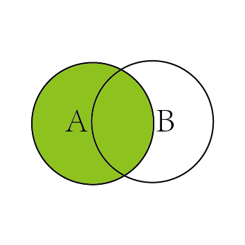
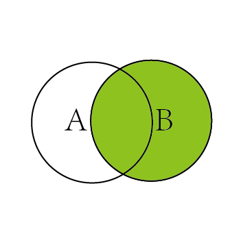
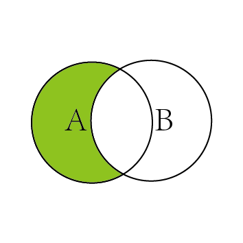
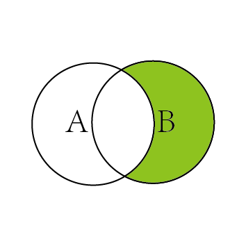
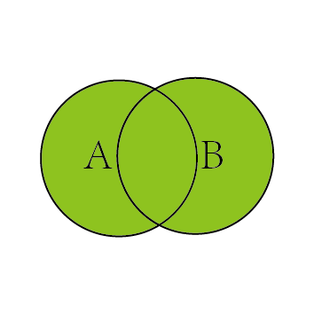
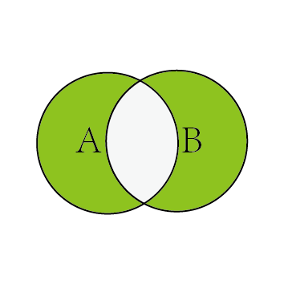

基础知识
数据库的发展阶段
数据库的种类
数据库的概念
数据库的概念：
- 对于数据库的概念，没有一个完全固定的定义，随着数据库历史的发展，定义的内容也有很大的差异，其中一种比较普遍的观点认为：
- 数据库（DataBase，DB）是一个长期存储在计算机内的、有组织的、有共享的、统一管理的数据集合。
- 它是一个按数据结构来存储和管理数据的计算机软件系统。
- 数据库包含两层含义：
- 保管数据的“仓库”
- 数据管理的方法和技术
数据库表的概念
数据库表的概念：
- 一系列二维数组的集合，用来存储数据和操作数据的逻辑结构
- 由纵向的列和横向的行组成
- 行被称为记录，是组织数据的单位
- 列被称为字段，每一列表示记录的一个属性，有相应的描述信息，如数据类型、数据宽度等
数据库的特点
数据库系统
SQL（Structured Query Language）语言
MySQL的优势
MySQL的数据类型
MySQL的数据类型-数值类型
MySQL的数据类型-日期与时间类型
MySQL的数据类型-文本字符串类型与二进制字符串类型
存储引擎对于选择CHAR和VARCHAR的影响-《MySQL8从入门到精通（视频教学版）》-P97：
- 对于MyISAM存储引擎：最好使用固定长度的数据列代替可变长度的数据列。这样可以使整个表静态化，从而使数据检索更快，用空间换时间
- 对于InnoDB存储引擎：使用可变长度的数据列，因为InnoDB数据表的存储格式不分固定长度和可变长度，因此使用CHAR不一定比使用VARCHAR更好，但由于VARCHAR是按照实际的长度存储的，比较节省空间，所以对磁盘I/O和数据存储总量比较好
ENUM和SET的选取-《MySQL8从入门到精通（视频教学版）》-P97：
- ENUM只能取单值，它的数据列表是一个枚举集合。它的合法取值列表最多允许有65535个成员。因此，在需要从多个值中选取一个时，可以使用ENUM。比如：性别字段适合定义为ENUM类型，每次只能从‘男’或‘女’中取一个值
- SET可取多值。它的合法取值列表最多允许有64个成员。空字符串可是一个合法的SET值。在需要取多个值的时候，适合使用SET类型，比如要存储一个人的兴趣爱好，最好使用SET类型
MySQL运算符概述（另附优先级表格）：
MySQL函数：
七种JOIN模式-INNER_JOIN模式

- SELECT <select_list>
- FROM TableA A
- INNER JOIN TableB B
- ON A.key = B.key
七种JOIN模式-LEFT_JOIN模式

- SELECT <select_list>
- FROM TableA A
- LEFT JOIN TableB B
- ON A.key = B.key
七种JOIN模式-RIGHT_JOIN模式

- SELECT <select_list>
- FROM TableA A
- RIGHT JOIN TableB B
- ON A.key = B.key
七种JOIN模式-LEFT_JOIN_B_KEY_NULL模式

- SELECT <select_list>
- FROM TableA A
- LEFT JOIN TableB B
- ON A.key = B.key
- WHERE B.key IS NULL
七种JOIN模式-RIGHT_JOIN_A_KEY_NULL模式

- SELECT <select_list>
- FROM TableA A
- RIGHT JOIN TableB B
- ON A.key = B.key
- WHERE A.key IS NULL
七种JOIN模式-FULL_OUTER_JOIN模式

- SELECT <select_list>
- FROM TableA A
- FULL OUTER JOIN TableB B
- ON A.key = B.key
七种JOIN模式-LEFT_JOIN_B_KEY_NULL模式

- SELECT <select_list>
- FROM TableA A
- FULL OUTER JOIN TableB B
- ON A.key = B.key
- WHERE A.key IS NULL
- OR B.key IS NULL
SQL执行加载顺序
手写形式：
- SELECT DISTINCT <select_list>
- FROM <left_table> <join_type>
- JOIN <right_table> ON <join_condition>
- WHERE <where_condition>
- GROUP BY <group_by_list>
- HAVING <having_condition>
- ORDER BY <order_by_condition>
- LIMIT <limit_number>
SQL执行加载顺序
机读形式：
- FROM <left_table>
- ON <join_condition>
- <join_type> JOIN <right_table>
- WHERE <where_condition>
- GROUP BY <group_by_list>
- HAVING <having_condition>
- SELECT
- DISTINCT <select_list>
- ORDER BY <order_by_condition>
- LIMIT <limit_number>